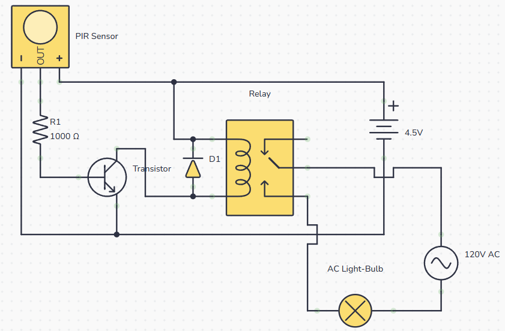
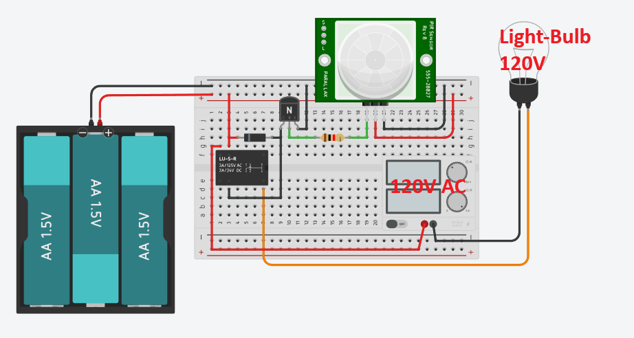
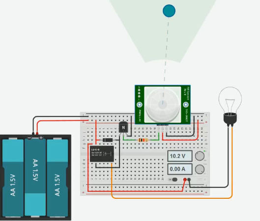
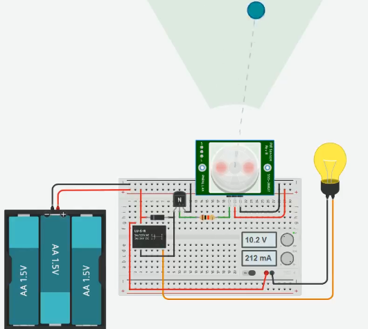

Motion-Activated 120V Light Control System
An isolated hybrid control circuit engineered to driver a 120V AC incandescent/LED lamp using low-power 4.5V DC passive infrared (PIR) sensing logic, transistor switching driver stage, inductive transient flyback suppression, and electromagnetic relay decoupling.
HIGH-VOLTAGE SAFETY WARNING
Working with 120V AC mains electricity carries severe shock and fire hazards. Always disconnect mains power before touching high-voltage connections. Ensure proper wire insulation, heat-shrink tubing, or relay enclosures. Proceed at your own risk and follow local electrical codes!.
System Architecture & Overview
DC Motion Detection
The Passive Infrared (PIR) sensor monitors ambient thermal radiation changes. Upon detecting motion, it outputs a HIGH signal (~3.3V to 5V DC) on its signal terminal.
Transistor Driver & Relay Coil
Because PIR sensor pins cannot directly drive current-heavy coils, an NPN BJT transistor (2N3904) operates as a low-side electronic switch to energize the 5V relay coil safely.
120V AC Mains Switching
The electromechanical relay contacts physically close, completing the 120V AC circuit path and powering the high-voltage lamp while maintaining electrical isolation.
Circuit Schematic & Flow Diagram

Bill of Materials & Component Specs
| Component | Designation | Rating / Value | Primary Technical Role |
|---|---|---|---|
| PIR Motion Sensor | PIR1 (HC-SR501) | 4.5V - 12V DC Input | Detects infrared radiation shifts and outputs a logic HIGH signal. |
| NPN BJT Transistor | Q1 (2N3904 / 2N2222) | Vce=40V, Ic=200mA | Low-side driver switch that energizes the 5V relay coil from logic output. |
| Base Resistor | R1 | 1 kΩ (1/4W) | Limits current entering the transistor base, protecting PIR output pin. |
| Flyback Diode | D1 (1N4001) | 50V, 1A Rectifier | Suppresses inductive high-voltage reverse spikes when relay coil collapses. |
| Electromechanical Relay | K1 (LU-5-R / SPDT) | 5V Coil / 120V AC 10A | Galvanically isolates DC logic from switching high-voltage AC mains line. |
| AC Load (Light Bulb) | LAMP1 | 120V AC / 60W | High-voltage illumination target switched ON via relay NO contacts. |
Step-by-Step Circuit Assembly Guide
1. Establish Low-Voltage DC Power Rails
Connect the 4.5V DC battery pack positive terminal (+) to the red breadboard bus line and the negative (-) terminal to the black common ground rail line.
2. Connect PIR Sensor Terminals
Wire VCC pin on PIR to +4.5V rail, GND pin to Ground rail, and run the center OUT signal pin to one end of the 1kΩ current-limiting resistor.
3. Configure NPN Transistor Switch Stage
Attach the other side of 1kΩ resistor to the Base pin of 2N3904. Connect Emitter directly to Ground. Connect Collector to relay coil pin terminal.
4. Install Relay & Flyback Diode
Connect 1N4001 diode in reverse bias directly across relay coil pins (Cathode striped side to +4.5V, Anode to Transistor Collector).

Circuit Operation Walkthrough
Select operational stages below to highlight how signals propagate sequentially from thermal PIR activation to high-voltage lamp lighting:
Stage 1: Infrared Radiation Detection
When a human body or thermal emitter moves across the PIR fresnel lens field, pyroelectric elements generate a differential voltage spike. The internal comparator triggers the OUT pin to transition from LOW (0V) to HIGH (~3.3V).
Interactive Circuit Simulator
Base drive current: 0.00 mA
Coil Current: 0.0 mA


Experience Full Interactive SPICE Simulation in Tinkercad
Run oscilloscope traces, probe node voltages, and test component values directly on Tinkercad Circuits.